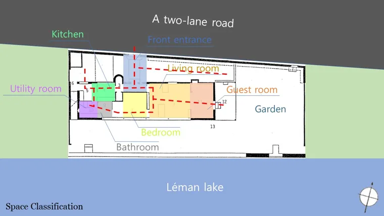
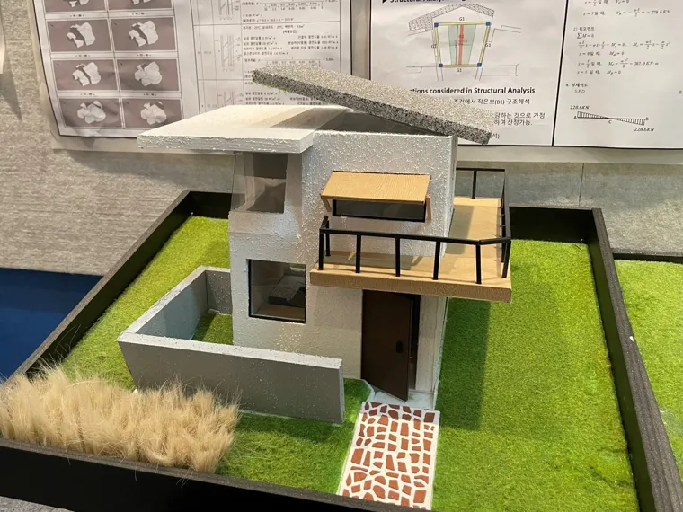
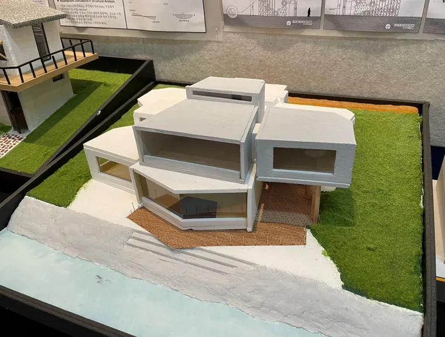
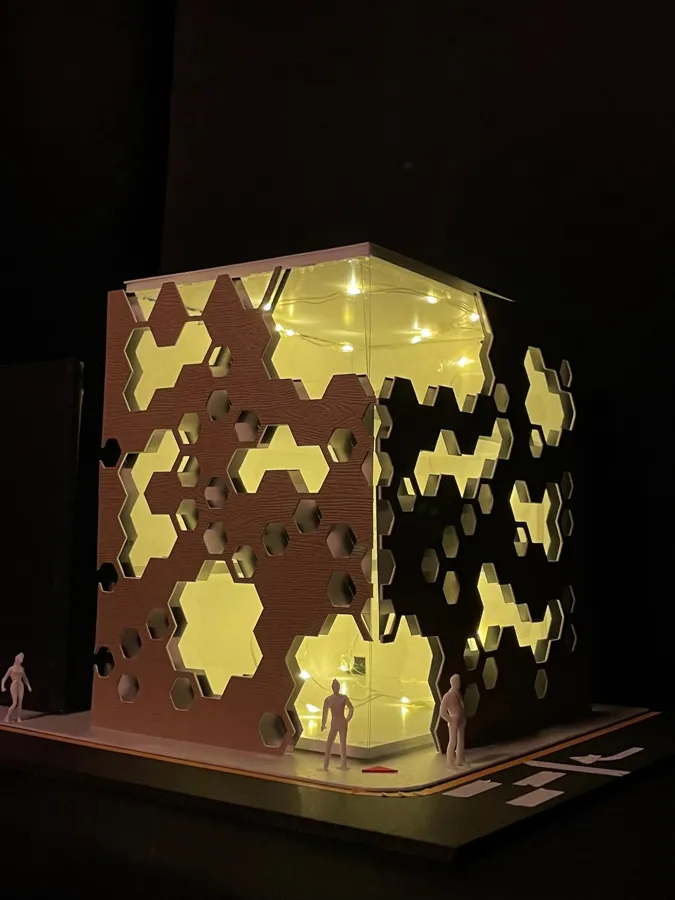
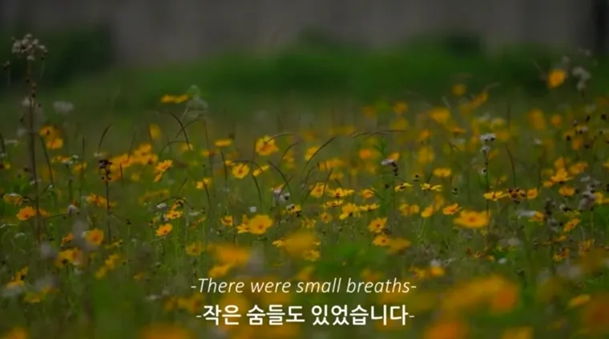
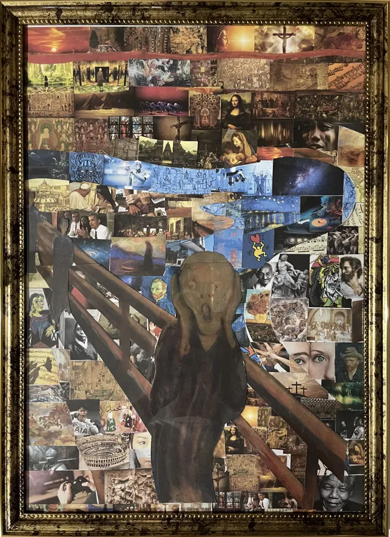
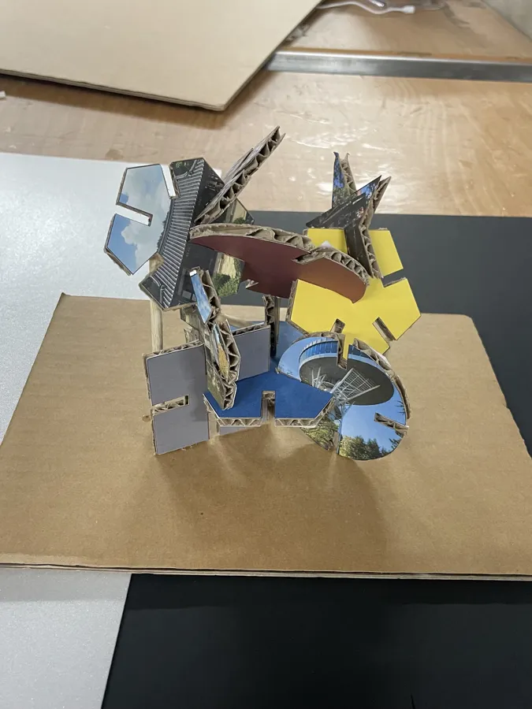

주택 사례 분석작품 보기작은 집에 담긴 건축의 원리
Villa Le Lac의 평면과 단면, 창과 풍경의 관계를 분석하며 주택을 읽는 시야를 넓혔습니다.
YEAR 02 / EXPLORATION
2022 · 2024
나를 위한 작은 집에서 음악가의 주택, 상업공간, 마을의 쉼터와 아트센터까지. 개념을 세우고 도면과 모형으로 구체화했습니다.
2022 · 건축설계 01
주택 사례를 분석한 뒤 나의 생활, 음악과 소리를 주제로 주거와 상업공간을 설계했습니다.

주택 사례 분석작품 보기Villa Le Lac의 평면과 단면, 창과 풍경의 관계를 분석하며 주택을 읽는 시야를 넓혔습니다.

소형 주택작품 보기밖으로는 사생활을 지키고, 안으로는 빛과 풍경에 열리는 나를 위한 작은 집을 설계했습니다.

상상 주택작품 보기류이치 사카모토를 가상 클라이언트로, 자연의 소리를 받아들이고 음악과 생활이 공존하는 주택을 구상했습니다.

상업공간 · 입면 설계작품 보기소리를 모으고 내보내는 이미지를 입면으로 옮긴 악기 상점. 반복되는 패턴과 빛으로 공간의 성격을 표현했습니다.

시각화 · 영상 프로젝트작품 보기일상에서 지나치기 쉬운 소리와 장면을 주제로, 건축의 개념을 영상과 시각적 이야기로 확장했습니다.
2024 · 건축설계 02
COMBINE이라는 생각을 시각화 작업에서 쉼터, 아트센터로 확장했습니다. 광주 양림동의 역사와 사람들의 일상이 설계의 출발점이 되었습니다.

시각화 · 콜라주작품 보기경험과 감정, 서로 다른 이야기가 만나 새로운 의미를 만드는 ‘COMBINE’을 콜라주로 표현했습니다.

쉼터 · 공공공간작품 보기양림동의 서로 다른 시간과 이야기가 만나는 나무 아래, 사람들이 쉬고 교류할 수 있는 작은 쉼터를 제안했습니다.
 아트센터 · 문화공간작품 보기
아트센터 · 문화공간작품 보기한옥과 선교사 주택, 마을의 풍경과 일상을 연결하는 양림동 아트센터. 다양한 이야기가 만나는 문화공간을 설계했습니다.